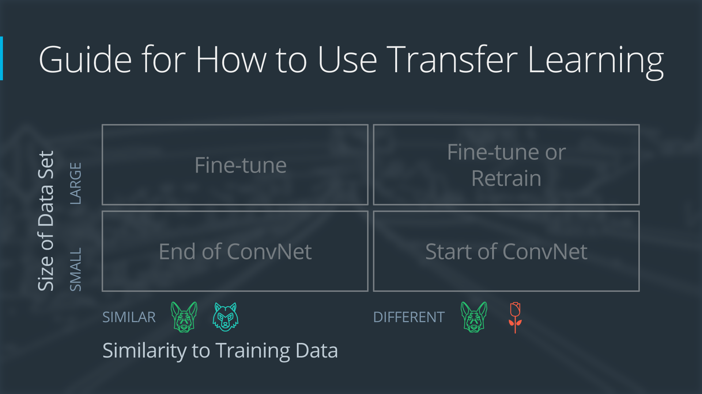

--
迁移学习
在搭建自己的深度神经网络的时候，我们完全可以借鉴别人已有的成功经验，比如 ALEX NET，VGG NET， RESNET，等等。
这种方法就叫做 迁移学习 transfer learning
什么时候，以及我们应该如何迁移？
对于不同的任务我们要采用不同的策略。
如果你有一个来自很大数据集（百万级以上）的已经训练好的模型，当你面对自己的训练集来完成你的目的时，

1. 你的训练集很大，训练任务很相似。
==> 复制已有的模型结构，以已经训练好的模型为开始状态，在你的训练集上继续训练（fine tune）

2. 你的训练集很大，训练任务不相似。
==> 复制已有的模型结构，重新开始训练（或者 fine tune 也可以）

3. 你的训练集很小，任务很相似。
==> 复制已有的结构模型，只在最后一层改为你需要的输出，冻结前面所有的模型参数，只训练最后输出层的参数

4. 你的训练集很小，训练任务不相似。
==> 无他，重新设计你的模型并开始训练（迁移学习也无解）

总结起来，就是如下：

既然采用了迁移学习，那么常用的两种方法就是 feature extraction 和 fine-tuning
前者在于，我们改变已有 model 的最后输出层（或者几层），同时对前面层的参数固定不变。
后者在于，前面层的参数在训练的时候也是会改变的。
换种理解，feature extraction 就是我们让样本现通过已有的模型的前面，得到在 high level 的 feature， 再对 high level 的 feature 进行训练。
DEMO
这是一个利用AlexNet 来进行交通标志识别的模型
https://github.com/udacity/CarND-Alexnet-Feature-Extraction >> git clone https://github.com/udacity/CarND-Alexnet-Feature-Extraction https://d17h27t6h515a5.cloudfront.net/topher/2016/October/580a829f_train/train.p